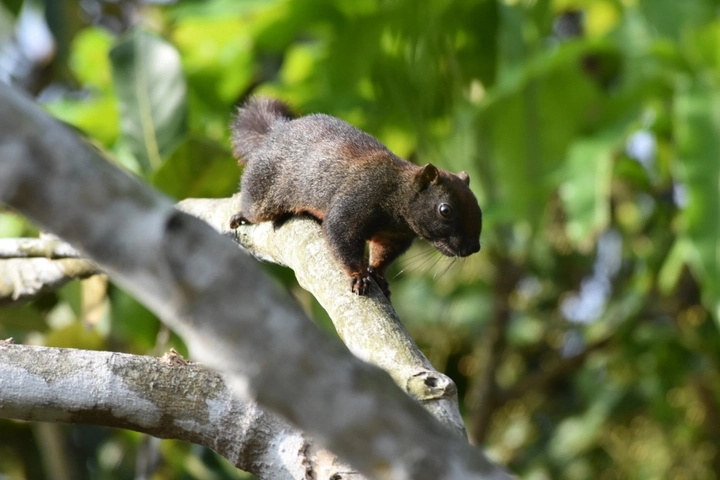
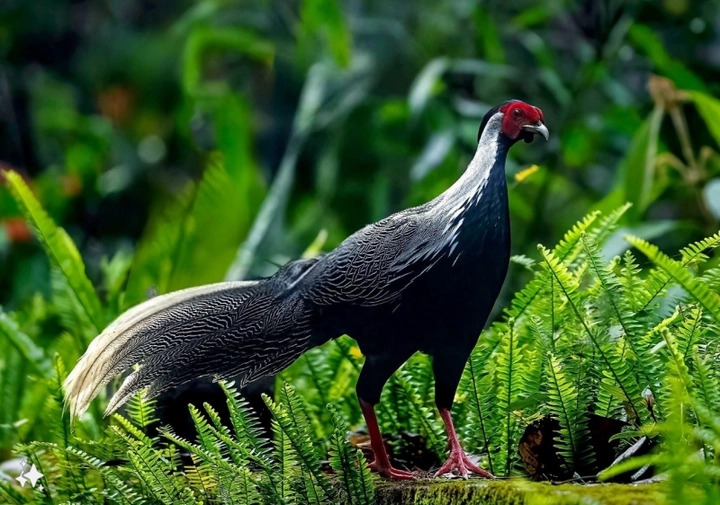
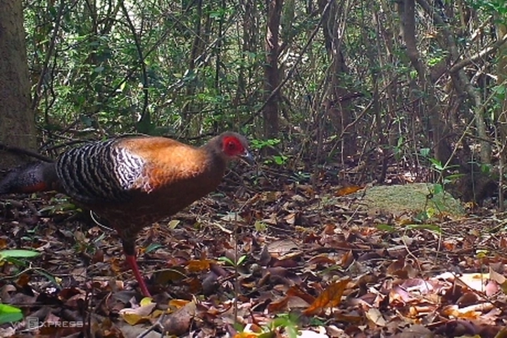
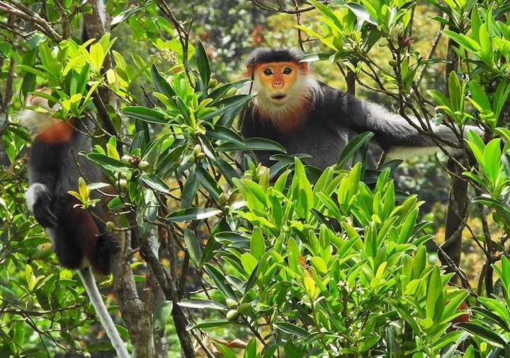
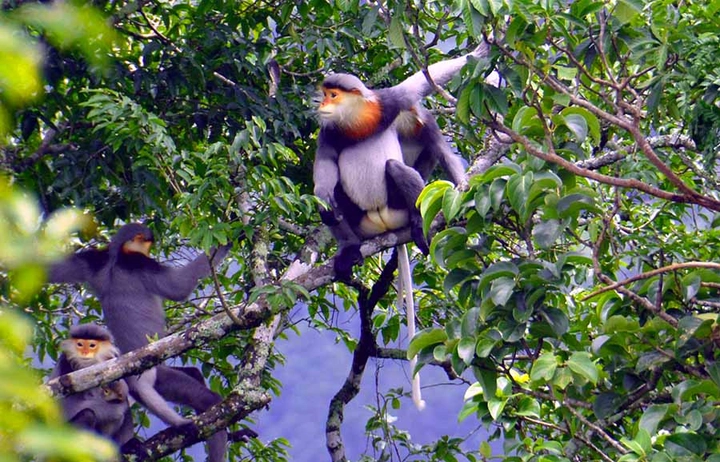

Sinh thái học và công nghệ bảo tồn
Trong thế kỷ 21, khi biến đổi khí hậu và suy giảm đa dạng sinh học đang trở thành thách thức toàn cầu, sự kết hợp giữa sinh thái học và công nghệ hiện đại đã mở ra một hướng đi mới cho công cuộc bảo vệ hành tinh.
Nếu như sinh thái học giúp chúng ta hiểu cách thế giới tự nhiên vận hành, thì công nghệ lại cung cấp công cụ để quan sát, phân tích và phục hồi những gì đang mất đi.
Từ việc dùng AI nhận dạng động vật hoang dã, cảm biến môi trường, đến dữ liệu vệ tinh giám sát rừng, con người đang dần bước vào kỷ nguyên “bảo tồn thông minh” – nơi mà khoa học và tự nhiên cùng song hành vì sự sống của Trái Đất.
Hôm nay hãy cùng. TrithucWorld tìm hiểu về chủ đề: Sinh thái học và công nghệ bảo tồn - Hành trình kết nối con người với thiên nhiên bằng sức mạnh công nghệ!
1. Giới thiệu về sinh thái học và công nghệ bảo tồn
Sinh thái học là ngành khoa học nền tảng giúp con người hiểu rõ cách các loài sinh vật tồn tại, tương tác và phụ thuộc lẫn nhau trong môi trường tự nhiên. Mỗi loài – dù là thực vật nhỏ bé hay động vật đầu chuỗi – đều đóng một vai trò nhất định trong việc duy trì cân bằng của toàn bộ hệ sinh thái. Khi một mắt xích trong chuỗi này bị phá vỡ, cả hệ thống sinh thái có thể bị ảnh hưởng nghiêm trọng, dẫn đến mất cân bằng và suy thoái môi trường sống.
Trong bối cảnh biến đổi khí hậu, ô nhiễm và khai thác tài nguyên quá mức, sinh thái học đóng vai trò như chiếc “la bàn khoa học”, giúp chỉ đường cho các nỗ lực phục hồi thiên nhiên. Từ việc nghiên cứu chu trình carbon, nguồn nước, đến hành vi di cư của động vật, sinh thái học mang đến cái nhìn toàn diện về cách hành tinh này vận hành và phản ứng trước những thay đổi do con người tạo ra.

Cùng lúc đó, công nghệ bảo tồn ra đời như một “đôi cánh mới” cho sinh thái học. Thay vì chỉ dựa vào quan sát thực địa tốn kém và hạn chế, các nhà nghiên cứu ngày nay có thể sử dụng công nghệ cảm biến, trí tuệ nhân tạo (AI), hình ảnh vệ tinh, và dữ liệu lớn (Big Data) để thu thập và phân tích thông tin môi trường theo thời gian thực. Dữ liệu thu được không chỉ nhanh và chính xác, mà còn giúp dự đoán xu hướng biến động sinh thái, từ đó đưa ra biện pháp bảo tồn sớm hơn, hiệu quả hơn.
Sự kết hợp giữa sinh thái học và công nghệ bảo tồn mở ra một chương mới trong hành trình gìn giữ hành tinh xanh. Con người không còn chỉ là kẻ quan sát, mà trở thành người đồng hành cùng tự nhiên – sử dụng trí tuệ và sáng tạo để bảo vệ chính nguồn sống của mình. Đây là hướng đi tất yếu trong thời đại số, nơi công nghệ không tách rời mà trở thành công cụ hỗ trợ mạnh mẽ cho mục tiêu phát triển bền vững toàn cầu.
2. Ứng dụng trí tuệ nhân tạo trong giám sát hệ sinh thái
Trí tuệ nhân tạo (AI) đang làm thay đổi cách chúng ta quan sát và bảo vệ thiên nhiên. Thay vì phụ thuộc hoàn toàn vào sức người để thu thập dữ liệu — vốn tốn thời gian và dễ sai lệch — AI có thể xử lý hàng triệu dữ liệu hình ảnh, âm thanh và tín hiệu môi trường chỉ trong vài phút. Các hệ thống AI được huấn luyện để nhận diện động vật, phân loại loài qua tiếng kêu, hoặc phát hiện thay đổi bất thường trong rừng, biển, hay sa mạc. Điều này giúp các nhà sinh thái học phát hiện sớm các dấu hiệu suy giảm quần thể, xâm lấn sinh học hoặc cháy rừng.
Ví dụ, các camera cảm biến chuyển động được kết hợp với AI có thể tự động nhận dạng từng cá thể trong bầy voi hoặc hổ, từ đó theo dõi hành vi di chuyển và sức khỏe của chúng mà không làm gián đoạn môi trường sống. Ở các rạn san hô, AI có thể phân tích hàng nghìn bức ảnh dưới nước để đánh giá tốc độ phục hồi của san hô sau bão hay hiện tượng tẩy trắng. Càng nhiều dữ liệu được cung cấp, AI càng “học” chính xác hơn, trở thành công cụ không thể thiếu trong công tác bảo tồn.
Bên cạnh đó, AI còn giúp dự báo sinh thái học — ví dụ như dự đoán nguy cơ tuyệt chủng dựa trên biến động khí hậu, hoặc mô phỏng sự thay đổi của thảm thực vật khi con người can thiệp. Đây chính là bước tiến vượt bậc, cho phép nhà quản lý đưa ra quyết định kịp thời và chính xác hơn bao giờ hết.
3. Hình ảnh vệ tinh và dữ liệu lớn trong theo dõi môi trường
Nhờ công nghệ hình ảnh vệ tinh, con người có thể quan sát toàn bộ Trái Đất mà không cần rời khỏi mặt đất. Những vệ tinh như Landsat, Sentinel hay MODIS cung cấp hình ảnh độ phân giải cao, giúp theo dõi sự thay đổi của rừng, sông, biển, băng tan và thậm chí là mức độ ô nhiễm không khí. Khi kết hợp với dữ liệu lớn (Big Data), các nhà khoa học có thể tổng hợp và phân tích sự biến đổi môi trường trong nhiều thập kỷ, từ đó nhận ra các xu hướng nguy hiểm như mất rừng, sa mạc hóa hay biến động nhiệt độ.
Những công nghệ này cho phép giám sát liên tục và toàn diện, điều mà con người trước đây không thể thực hiện. Chẳng hạn, một vùng rừng Amazon bị chặt phá sẽ được phát hiện gần như ngay lập tức nhờ hình ảnh vệ tinh, giúp chính quyền và tổ chức bảo tồn hành động nhanh hơn. Hay trong lĩnh vực đại dương học, dữ liệu vệ tinh có thể đo nhiệt độ mặt biển, dòng chảy và độ mặn – những yếu tố ảnh hưởng trực tiếp đến sự sống của sinh vật biển.

Khi kết hợp với công cụ phân tích dữ liệu lớn, con người không chỉ nhìn thấy hiện trạng mà còn có thể dự đoán tương lai của hệ sinh thái. Đây là nền tảng cho việc quy hoạch môi trường, thiết kế khu bảo tồn thông minh và ứng phó với biến đổi khí hậu trên phạm vi toàn cầu.
4. Công nghệ cảm biến và Internet vạn vật (IoT) trong nghiên cứu sinh thái
Internet vạn vật (IoT) mở ra khả năng kết nối hàng nghìn thiết bị cảm biến trong tự nhiên, tạo thành “mạng lưới sinh thái số” theo dõi từng chuyển động của môi trường. Những cảm biến nhỏ bé có thể được gắn lên cây, động vật, hoặc thậm chí thả trôi theo dòng nước để thu thập thông tin như nhiệt độ, độ ẩm, nồng độ CO₂, âm thanh hoặc tín hiệu sinh học. Tất cả dữ liệu này được gửi về trung tâm để xử lý theo thời gian thực.
Nhờ IoT, các nhà khoa học có thể giám sát liên tục những vùng mà con người khó tiếp cận như rừng rậm, vùng núi cao hay đại dương sâu. Ví dụ, trong rừng nhiệt đới, cảm biến âm thanh có thể phát hiện tiếng cưa máy – dấu hiệu của nạn phá rừng – và gửi cảnh báo ngay lập tức. Còn trong môi trường biển, các phao cảm biến giúp theo dõi lượng oxy hòa tan, nhiệt độ và độ pH, từ đó đánh giá sức khỏe của hệ sinh thái dưới nước.
Đặc biệt, khi kết hợp với trí tuệ nhân tạo, mạng lưới IoT không chỉ thu thập dữ liệu mà còn có thể tự động phản ứng — ví dụ, kích hoạt hệ thống phun nước khi phát hiện cháy rừng, hay cảnh báo khi động vật rời khỏi khu bảo tồn. Nhờ vậy, IoT đang dần biến sinh thái học thành một lĩnh vực năng động, tự động hóa và chính xác hơn bao giờ hết.
5. Công nghệ di truyền trong bảo tồn loài quý hiếm
Công nghệ di truyền đang mở ra hướng đi mới cho việc bảo tồn những loài có nguy cơ tuyệt chủng. Thông qua phân tích DNA, các nhà khoa học có thể xác định mức độ đa dạng di truyền, phát hiện giao phối cận huyết và thiết lập kế hoạch lai tạo phù hợp để tăng sức sống cho quần thể. Mẫu DNA có thể được thu thập từ lông, phân, hoặc nước — giúp theo dõi loài mà không cần tiếp xúc trực tiếp, giảm thiểu tác động đến môi trường sống.
Một trong những ứng dụng quan trọng là công nghệ eDNA (environmental DNA) – tức là DNA trong môi trường. Chỉ cần lấy mẫu nước ở sông, hồ hay biển, các nhà nghiên cứu có thể xác định được sinh vật từng đi qua đó. Nhờ eDNA, nhiều loài tưởng chừng đã biến mất được phát hiện trở lại, giúp kịp thời khoanh vùng và bảo vệ.

Ngoài ra, công nghệ chỉnh sửa gen như CRISPR cũng đang được nghiên cứu để phục hồi những loài gần tuyệt chủng hoặc tăng khả năng chống chịu của sinh vật với biến đổi khí hậu. Dù còn gây tranh cãi về đạo đức, công nghệ di truyền hứa hẹn sẽ là chìa khóa vàng cho công tác bảo tồn hiện đại, nơi con người không chỉ quan sát mà có thể chủ động hỗ trợ sự tồn tại của sự sống trên hành tinh.
6. Drone và robot trong bảo tồn thiên nhiên
Máy bay không người lái (drone) và robot đang trở thành “đôi mắt trên bầu trời” của các nhà bảo tồn. Trước đây, việc khảo sát rừng, đếm số lượng động vật hay theo dõi biến động môi trường đòi hỏi hàng tuần, thậm chí hàng tháng làm việc thủ công. Giờ đây, chỉ cần vài giờ bay drone là có thể thu được hàng nghìn bức ảnh chất lượng cao, giúp xác định tình trạng rừng, theo dõi đường di chuyển của động vật hoặc phát hiện các điểm cháy rừng mới phát sinh.
Ở châu Phi, drone được sử dụng để giám sát các khu vực có nạn săn bắn trộm voi và tê giác. Hệ thống này có thể nhận diện con người hoặc phương tiện di chuyển bất thường và gửi cảnh báo ngay lập tức cho lực lượng kiểm lâm. Tại Việt Nam, một số dự án bảo tồn ở Vườn quốc gia Cúc Phương và Phong Nha – Kẻ Bàng cũng đã thử nghiệm dùng drone để chụp ảnh trên cao, phục vụ nghiên cứu thảm thực vật và động vật quý hiếm.
Không chỉ drone, robot dưới nước (ROV) còn được triển khai để khảo sát san hô, cá và sinh vật đáy biển mà thợ lặn khó tiếp cận. Một số robot thậm chí còn được trang bị cánh tay cơ học để nhặt rác hoặc thu mẫu sinh học phục vụ phân tích. Nhờ đó, công nghệ robot đã giúp bảo tồn thiên nhiên một cách an toàn, chính xác và bền vững hơn — giảm thiểu tác động con người trực tiếp lên môi trường tự nhiên.
Tại Việt Nam, ở một số vườn Quốc gia như Vũ Quang, Pù Mát, U Minh ... đã áp dụng Drone vào việc quan sát và theo dõi các loại động vật đang quý hiếm. Dù chỉ đang trong giai đoạn thử nghiệm nhưng kết quả cho thấy Drone đã thu được rất nhiều hình ảnh về động vật quý hiếm mà trước nay con người chưa chụp được.
7. Thực tế ảo (VR) và thực tế tăng cường (AR) trong giáo dục bảo tồn
Công nghệ thực tế ảo và thực tế tăng cường đang tạo ra những trải nghiệm hoàn toàn mới trong giáo dục và truyền thông bảo tồn. Thay vì chỉ đọc hoặc xem hình ảnh, học sinh và người xem có thể “bước vào” rừng nhiệt đới, lặn xuống đại dương, hay dạo quanh vùng Bắc Cực để chứng kiến tác động của biến đổi khí hậu và hoạt động con người lên môi trường.
Nhiều bảo tàng và trung tâm sinh thái học hiện đã ứng dụng VR để tái hiện các hệ sinh thái đã biến mất hoặc mô phỏng sự phục hồi của rừng sau nạn cháy. Ở đó, người dùng có thể tương tác, chạm vào động vật ảo, quan sát cách chúng di chuyển và hiểu được vai trò sinh thái của từng loài. Công nghệ AR còn cho phép “hiển thị thông tin sinh học” trực tiếp khi soi camera vào cây, động vật hoặc cảnh quan thực tế, giúp việc học trở nên sinh động và dễ tiếp thu hơn.

Những trải nghiệm này không chỉ giúp lan tỏa nhận thức về bảo tồn mà còn khơi dậy cảm xúc và trách nhiệm cá nhân. Khi con người “nhìn thấy” sự thay đổi của hành tinh bằng chính trải nghiệm ảo của mình, họ dễ thấu hiểu hơn tầm quan trọng của việc bảo vệ thiên nhiên – điều mà các phương pháp giáo dục truyền thống khó đạt được.
8. Blockchain và minh bạch trong chuỗi bảo tồn
Công nghệ blockchain – vốn nổi tiếng trong lĩnh vực tài chính – đang chứng minh giá trị to lớn trong công tác bảo tồn. Bản chất của blockchain là tạo ra hệ thống ghi nhận dữ liệu minh bạch, không thể sửa đổi, và được kiểm chứng bởi nhiều bên. Trong bảo tồn, điều này có thể được dùng để theo dõi nguồn gốc động vật hoang dã, gỗ, hoặc các sản phẩm sinh học nhằm ngăn chặn buôn bán trái phép.
Ví dụ, mỗi khúc gỗ khai thác hợp pháp có thể được gắn mã blockchain, giúp xác nhận hành trình của nó từ rừng đến nhà máy chế biến. Nếu một sản phẩm không có mã này, người tiêu dùng có thể dễ dàng biết đó là hàng bất hợp pháp. Các tổ chức bảo tồn quốc tế như WWF đã thử nghiệm công nghệ này tại Indonesia và Papua New Guinea để kiểm soát chuỗi cung ứng gỗ và cá ngừ, giúp bảo vệ nguồn tài nguyên khỏi khai thác bừa bãi.
Ngoài ra, blockchain còn được ứng dụng để minh bạch hóa nguồn quỹ bảo tồn, đảm bảo rằng tiền quyên góp thực sự đến đúng nơi cần thiết. Mỗi giao dịch đều được lưu trữ công khai, giúp tăng niềm tin giữa cộng đồng, nhà tài trợ và các tổ chức phi lợi nhuận. Nhờ vậy, blockchain đang trở thành “chìa khóa tin cậy” trong thế giới bảo tồn hiện đại, nơi minh bạch và niềm tin đóng vai trò quyết định.
9. Phục hồi hệ sinh thái bằng công nghệ sinh học
Công nghệ sinh học mở ra khả năng phục hồi hệ sinh thái đã bị tàn phá trong quá khứ. Thay vì chỉ trồng lại cây, con người giờ đây có thể khôi phục toàn bộ cấu trúc sinh học của một khu vực – từ đất, vi sinh vật, đến động thực vật bản địa. Các nhà khoa học sử dụng kỹ thuật nuôi cấy mô, nhân bản tế bào thực vật, và thậm chí là tái tạo DNA để mang lại sự sống cho những loài gần như đã biến mất.
Một số dự án quốc tế đã thử nghiệm “tái tạo rừng nguyên sinh” bằng cách cấy ghép các loài nấm, vi khuẩn và hạt giống bản địa để khôi phục chuỗi dinh dưỡng tự nhiên. Ở các vùng đất ngập mặn, kỹ thuật vi sinh được áp dụng để lọc nước ô nhiễm, phục hồi hệ rễ cây đước và tái thiết vùng đệm sinh thái. Thậm chí, các nhà khoa học còn nghiên cứu “hồi sinh loài tuyệt chủng” – như dự án tái tạo voi ma mút bằng cách kết hợp DNA với voi châu Á, nhằm khôi phục cân bằng sinh học ở vùng băng giá.

Dù vẫn còn gây tranh cãi, nhưng công nghệ sinh học mang đến hy vọng về một tương lai nơi con người có thể chữa lành những tổn thương mà chính mình gây ra cho hành tinh. Nó không chỉ là công cụ phục hồi, mà còn là lời nhắc nhở về trách nhiệm đạo đức của nhân loại với thế giới tự nhiên.
10. Tương lai của sinh thái học và công nghệ bảo tồn
Tương lai của sinh thái học và công nghệ bảo tồn là sự hòa quyện giữa tri thức khoa học, dữ liệu số, và ý thức con người. Khi AI, cảm biến, drone, blockchain và công nghệ di truyền ngày càng tiến bộ, con người sẽ có khả năng hiểu và điều hành hệ sinh thái theo cách toàn diện hơn bao giờ hết. Các khu bảo tồn trong tương lai có thể trở thành “hệ sinh thái thông minh”, nơi mọi yếu tố – từ động vật, cây cối đến môi trường – đều được kết nối và giám sát tự động.
Tuy nhiên, công nghệ chỉ là công cụ. Giá trị cốt lõi vẫn nằm ở nhận thức và hành động của con người. Mỗi dữ liệu được ghi nhận, mỗi thuật toán được huấn luyện đều phải phục vụ mục tiêu lớn hơn: bảo vệ sự sống trên Trái Đất. Sự kết hợp giữa khoa học và đạo đức sinh thái sẽ quyết định liệu công nghệ có thực sự giúp thiên nhiên phục hồi hay không.
Trong bức tranh ấy, Việt Nam và các quốc gia đang phát triển có cơ hội lớn để đi tắt, đón đầu, ứng dụng công nghệ tiên tiến vào công tác bảo tồn. Nếu được đầu tư đúng hướng, sinh thái học và công nghệ bảo tồn có thể trở thành trụ cột cho phát triển bền vững – nơi con người và thiên nhiên cùng tồn tại hài hòa, không phải đối lập.